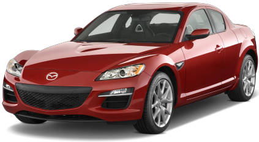

Mazda RX-8
The Mazda RX-8 was the successor to the RX-7 that was released in 2004. Mazda marketed the vehicle as a “4-door quad coupe.” It was essentially a quasi-four-door sports car with two doors that open opposite the two standard doors. Mazda kept the tradition of the “Wankel” rotary engine under the hood, with a 1.3L unit. The engine was mid-front mounted and sent power through a manual or automatic transmission to the rear wheels.
Mazda assumed that a customer buying a six-speed manual wants performance; therefore, all manuals came with 238hp and added performance features versus the automatic paddle-shifted transmission with just 197hp. Some RX-8 variants of mention include the Sport, Grand Touring, 40th Anniversary Edition, Shinka Edition, Touring, and R3.
Mazda discontinued the RX-8 in 2012.
- Engine :1.3 liter (Wankel 2)
- Horsepower :228 hp
- Drivetrain :RWD
- Top Speed :235 Km/h - 146 Mph
- 0 to 100 km/h (0 to 62 mph) :6.4 s
- Download catalog